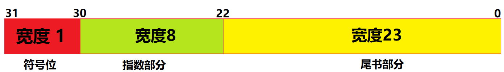
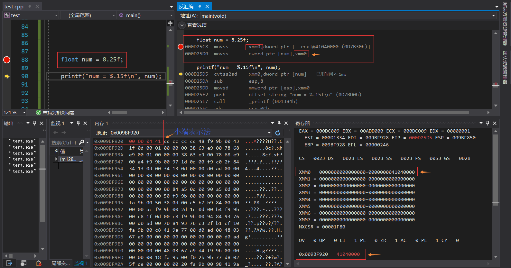
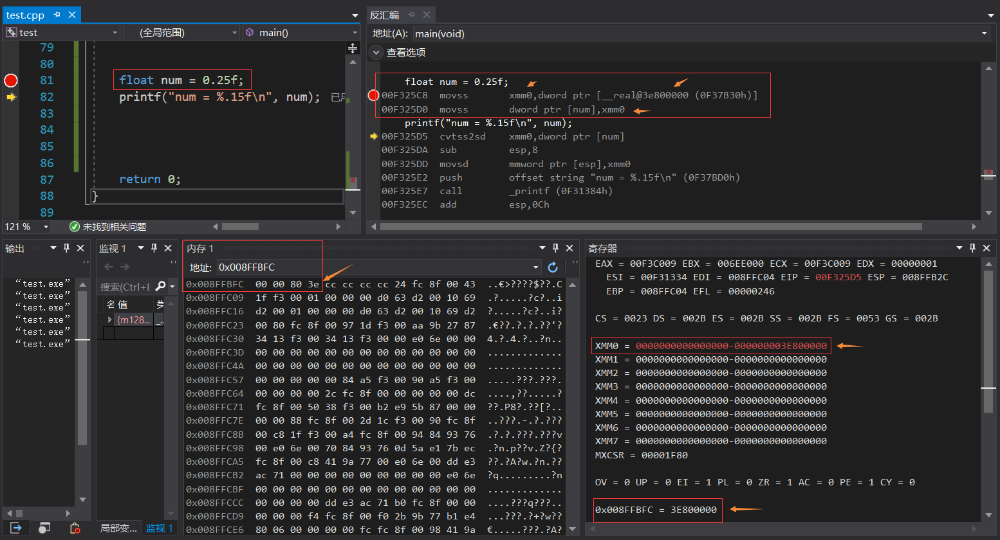
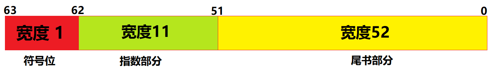

计算机内存中浮点数的表示
float和double在存储方式上都遵从IEEE的规范
float类型表示方法
float的内存存储方式如下图所示：

- 第31位表示符号位
- 第30位表示移位方向 1左移 0右移
- 第23-29位表示指数 左移为正，右移为负
- 第0-22位表示尾数即小数点右部分
以8.25为例：
step 1：将8.25转为二进制 1000.01
step 2：将1000.01使用科学计数法表示，由于小数点左边不为零故将小数点左移3位表示为 1.00001 * 2^3
step 3：字节填充
符号位：由于8.25为正数所以符号位为0
指数部分：由于左移所以移位方向为1
剩下7个比特位用指数-1填充，3-1 = 2 补码表示即 0000 0010 用剔除符号位的000 0010填充
尾数部分：用小数点右部的00001填充0-22位的高位部分，剩余位用零填充
最终填充结果为：0100 0001 0000 0100 0000 0000 0000 0000
十六进制表示为：0x41040000结论证明如下图：

以0.25为例：
step 1：将0.25转为二进制 0.01
step 2：将0.01使用科学计数法表示，由于小数点左边为零故将小数点右移2位表示为 1.0* 2^-2
step 3：字节填充
符号位：由于0.25为正数所以符号位为0
指数部分：由于右移所以移位方向为0
剩下7个比特位用指数-1填充，-2-1 = -3 补码表示即 1111 1101 用剔除符号位的111 1101填充
尾数部分：用小数点右部的0填充0-22位的高位部分，剩余位用零填充
最终填充结果为：0011 1110 1000 0000 0000 0000 0000 0000
十六进制表示为：0x3E800000结论证明如下图：

double类型表示方法
double的内存存储方式如下图所示：

填充过程同float